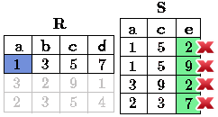
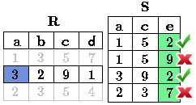
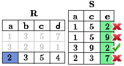

Algebra, in general, consists of operators and atomic operands. For instance, in the algebra of arithmetic, the atomic operands are variables like r, and constants like 15. The operators are the usual arithmetic ones:
- Addition
- Subtraction
- Multiplication
- Division.
Any algebra allows us to build expressions by applying operators to atomic operands and/or other expressions of the algebra. Usually, parentheses are needed to group operators and their operands. For instance, in arithmetic we have expressions such a \((x + y) * z\) ó \(((x + 7)/(y - 3)) + x\).
Relational algebra is another example of algebra. Its atomic operands are:
- Variables that stand for relations
- Constants, which are finite relations
Note
In some books of relational algebra or SQL, a relation is considered a synonym of a table.
As we mentioned, in the classical relational algebra, all operands and the results of expressions are sets. The operations of the traditional relational algebra fall into four broad classes:
- The usual set operations - union, intersection, and difference - applied to relations.
- Operations that remove parts of a relation: selection eliminates some rows (tuples), and projection eliminates some columns.
- Operations that combine the tuples of two relations, including Cartesian product, which pairs the tuples of two relations in all possible ways and various kinds of join operations, which selectively pair tuples from two relations.
- An operation called “renaming” that does not affect the tuples of a relation, but changes the relation schema, i.e., the names of the attribute sand/or the name of the relation itself.
We shall generally refer to expressions of relational algebra as queries. While we don’t yet have the symbols needed to show many of the expressions of relational algebra, you should be familiar with the operations of group (a); and thus recognize ( \(\text{R} \cup \text{S}\) ) as an example of an expression of relational algebra. \(\text{R}\) and \(\text{S}\) are atomic operands standing for relations, whose sets of tuples are unknown. This query asks for the union of whatever tuples are in the relations named \(\text{R}\) and \(\text{S}\). The three most common operations on sets are union, intersection, and difference.
Relational operators are used to filter, cut or join tables.
This operator is applied to a relation \(\text{R}\) producing a new relation with a subset of tuples of \(\text{R}\). The tuples of the resulting relation are the ones that satisfy a condition \(C\) about some attribute of \(\text{R}\). In other words, it selects rows of a table according to a certain criterion \(C\). That is, select rows (tuples) from a table according to a certain criterion \(C\). \(C\) is a conditional expression, similar to the statements of the type “if”, is “booleana” this means that for each tuple of \(\text{R}\), it takes the value of True or False.
- \(=\) : equal sign.
- \(\neq\): not-equal sign, in some books this operator is represented by the symbol !=.
- \(\geq\): greater than or equal.
- \(>\): greater than.
- \(<\): less than.
- \(\leq\): less than or equal.
Logical operators that are used, also called relational operators, provide us a result from the fulfillment or not fulfillment of a certain condition. They are symbols used to compare two values. If the result of the comparison is correct, the considered expression is true; in the contrary case, is false. For example, 11>4 (eleven greater than four) is true, it is represented by the value “true” of the basic type boolean. On the other hand, 11<4 (eleven less than four) is false and it is represented by the value “false.”
The clauses \(C\) can be connected with the logical operators, which like the previous ones that were used as Comparator (between attributes or constant attribute), thrown bololean (true or false) result:
Notation in Relational Algebra
To represent Select in relational algebra it is use the Greek letter sigma: \(\sigma\). So if \(\sigma_{c} \ \boldsymbol{R}\) is used, means that the condition \(C\) is applied to each tuple of \(\text{R}\). If the condition is true, this tuple will belong to the result and if it false, this tuple will not be selected. The scheme of the resulting relationship is the same scheme \(\text{R}\), shows the attributes in the same order as used in Table \(\text{R}\).
Select tuples from the \(\text{Engineers}\) table that comply an age greater than 30 years:
Answer
In the image you can see that are selected only the rows that comply with the condition that was requested (to be greater than 30 years), the tuple of “Lexie” is left outside of the selection for not fulfill the condition (as 25 < 30).
So the table would look like this:
Select from the \(\text{Engineer}\) table people who are over 30 years old and carrying less than 16 years working:
Answer
By having the logical operator AND is required to meet two conditions simultaneously. First that the age is greater than 30 years, like in the previous example, the tuple of “Lexie” is left out of the selection. Then from the remaining tuples, the second condition is evaluated. In the image it is shown that only are selected the rows that do not have the X in any of the conditions.
So the table would finally look like this:
The Project operator is used to produce a new relation from \(\text{R}\). This new relation contains only some of the attributes of \(\text{R}\), in other words, performs the selection of some of the columns of a table \(\text{R}\).
Notation in Relational Algebra
Project in Relational Algebra is represented by the Greek letter pi:
The result is a relation selecting only attributes \(A1,...,An\) of the relation \(R\). If \(A1,...,An\) does not include a key, it may cause repeated tuples in the result, which will be removed.
Select columns of ID and Name of the \(\text{Engineer}\) table:
Answer
So the table would finally look like this:
Select id and name of the \(\text{Engineers}\) who have more than 30 years old.
Answer
It is appreciated that the tuples that do not meet the condition of selection are left out of the result, then it is performed a PROJECT on the rows of the result, separating only the columns that contain the id and name attributes. Finally the table would look like this:
In theory of sets, the Cross-Product (or Cartesian product) of two sets is an operation that results in another set whose elements are all the ordered pairs that can be formed by taking the first element of the pair of the first set, and the second element of the second set. In Relational Algebra this idea is maintain except that \(\text{R}\) and \(\text{S}\) are relations, so the members of \(\text{R}\) and \(\text{S}\) are tuples, which generally consist of more than one component, which result of the link with a tuple of \(\text{R}\) with a tuple of \(\text{S}\) is a longer tuple, with one component for each of the components of the constituent tuples. That is, Cross-Product defines a relation that is the concatenation of each of the rows of the relation \(\text{R}\) with each of the rows in the relation \(\text{S}\).
Notation in Relational Algebra
To represent Cross-product in Relational Algebra, it is used the following terminology:
By convention for the previous statement, the components of \(\text{R}\) precede \(\text{S}\) components in the order of attributes for the result, creating a new relationship with all possible combinations of tuples of \(\text{R}\) and \(\text{S}\). The number of tuples of the resulting new relation is the multiplication of the number of tuples of \(\text{R}\) by the number of tuples that have \(\text{S}\) (product of both). If \(\text{R}\) and \(\text{S}\) have some common attributes, then we must invent new names for at least one of each pair of identical attributes. To eliminate ambiguity of an attribute a, which is in \(\text{R}\) and \(\text{S}\), it is used \(R.a\) for the attribute of \(\text{R}\) and \(S.a\) for the attribute of \(\text{S}\).
Noteworthy that by notation:
With the given tables make the Cross-product of \(\text{R}\) with \(\text{S}\):

With blue are highlighted the tuples which come from \(\text{R}\) that are preceded and mixed with the ones of \(\text{S}\) highlighted in green.
With the given tables make a Cross-product of \(\text{S}\) with \(\text{R}\):

Given the following tables:
Write the resulting table to perform the following operation:
Answer
This operator is used when there is the need to link relations linking only tuples that match somehow. NaturalJoin joins only the pairs of tuples of \(R\) and \(S\) that are common. More precisely a tuple \(r\) of \(R\) and a tuple \(s\) of \(S\) are matched correctly if and only if \(r\) and \(s\) coincide in each of the values of the common attributes, the result of the linking is a tuple, called “joined tuple.” So when performing NaturalJoin it is obtained a relation with the attributes of both relations that have the same value in the common attributes.
Notation in Relational Algebra
For denoting NaturalJoin it is used the following symbols:
Equivalence with basic operators
NaturalJoin can be written in terms of some operators already seen, the equivalence is:
Method
- Perform the Cross-Product \(\text{R} \times \text{S}\).
- Select those rows of the Cartesian product for which the common attributes have the same value.
- Delete from the result an occurrence (column) of each of the common attributes.
With the tables given make a NaturalJoin of \(\text{R}\) and \(\text{S}\):

The attribute that has in common \(\text{R}\) and \(\text{S}\) is the attribute c, so the tuples are join where c has the same value in \(\text{R}\) and \(\text{S}\).
Perform NaturalJoin to the following tables:
Answer
It defines a relation containing tuples that satisfy the predicate \(C\) in the Cross-Product of \(\text{R} \times \text{S}\). It connects relations when the values of certain columns have a specific interrelation. The condition \(C\) is of the form R.ai <operator_of_comparation> S.bi, this condition is of the same type used Select. The predicate does not have to be defined on common attributes. The term “join” usually refers to ThetaJoin.
Notation in Relational Algebra
The notation of the ThetaJoin is the same symbol used for NaturalJoin; the difference is that ThetaJoin carries the predicate \(C\):
C = <Atributte> <Comparator> <Atributte o Constant> where <Comparator> \(\in {\{=,\geq,>,<, \neq,\leq \}}\)
Equivalence with basic operators
As NATURALJOIN, THETAJOIN can be written in function of previously viewed operators:
Method
- Form the CROSS-PRODUCT \(R \times S\).
- Select, in the product, only the tuple that satisfy the condition \(C\).
Write the resultant table as you do the following operation:
Answer
It is compared the attribute a of the first row of \(\text{R}\) with each of the values of attribute e of the \(\text{S}\) table. In this case, none of the comparisons returns the true value (true).
Then it is compared the attribute a in the second row of \(\text{R}\) with each of the values of the attribute e of the table \(\text{S}\). In this case, 2 comparisons return the true value (true), so that in the relation of resultant will be the second row of \(\text{R}\) mixed with the first and third row of \(\text{S}\).
In the same way, now it is compared the value of a of the third tuple of \(\text{R}\). Once again, 2 tuples of \(\text{S}\) comply with the condition.
With the following conceptual scheme, find the names of the directors of each department:
Department (\(\underline{\text{numDpto}}\), name, nIFDirector, dateStart)
Employee (\(\underline{\text{nIF}}\), name, address, salary, dpto, nIFSupervisor)
Answer
Consider the following databases:
Write relational algebra expressions for the following five queries.